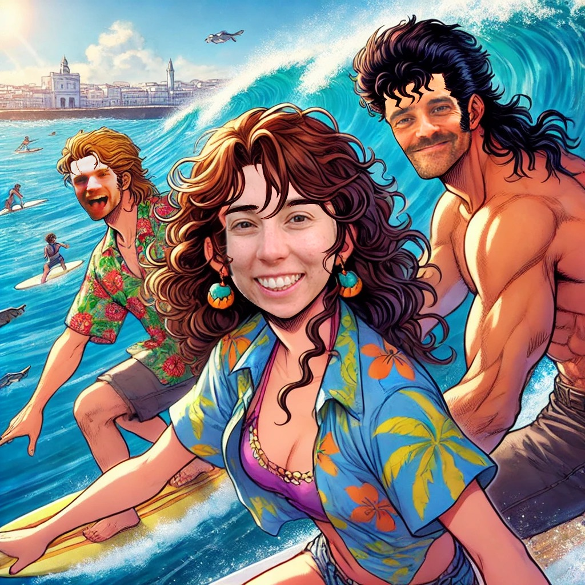

FELICIDADES PAULA LÓPEZ
ÉVALO
↓ ATENÇIAO PRA'L REGALIHNO ↓

OH PAULA, by Diego il Suno di Cemozzza
[Verso 1]
Tiene mil tabs en su navegador,
una idea, un dibujo, un algoritmo mejor.
Se ríe si hablas con palabras raras,
“te mordió un diccionario, te dice sin pudor.”
Va al gym con ritmo, sonríe con el maider,
y en Burger King no la para nadie.
Ama programar, crear y fluir,
pero hay algo esperando por descubrir...
[Estribillo]
🎵 Paula, oh Paula,
siente profundo, vibra tan alta.
Paula, oh Paula,
como tu alma baila... 🎵
[Verso 2]
Agus y Diego la miran brillar,
preparan un plan que no va a olvidar.
Ella no sabe, pero en su honor,
hay tablas, olas y mucho sol.
“Es del colectivo”, dicen por ahí,
con mirada despierta, firme y sutil.
Policía woke, pero sin sermón,
te abraza, te escucha, te da reflexión.
[Estribillo – Repite]
🎵 Paula, oh Paula,
siente profundo, vibra tan alta.
Paula, oh Paula,
como tu alma baila... 🎵
[Puente – Drop Build Up]
Y llega el día,
sin sospechar,
le dicen: “Paula,
te vas a mojar…”
Un ticket, un traje,
la tabla en el mar,
el regalo perfecto
para ver(te) volar.
[Drop / Instrumental con vocal chops]
🎵 Paula... oh Paula...
surfeando el alma...
Paula... oh Paula...
como tu alma baila... 🎵
[Outro – Spoken loop / fade]
Pimiento crudo,
maider con calma,
líneas de código...
y olas en el alma.
🎵 Paula… oh Paula…
como tu alma baila... 🎵